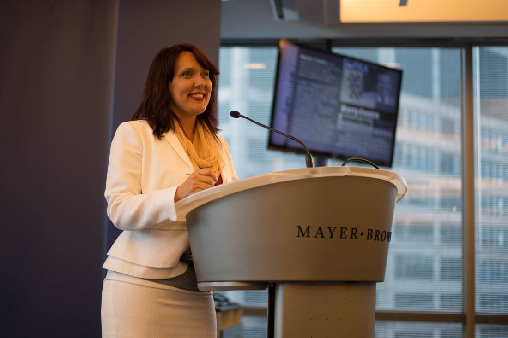
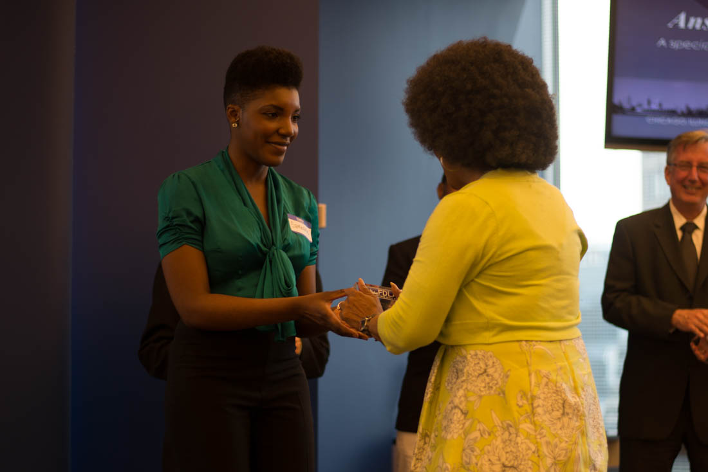
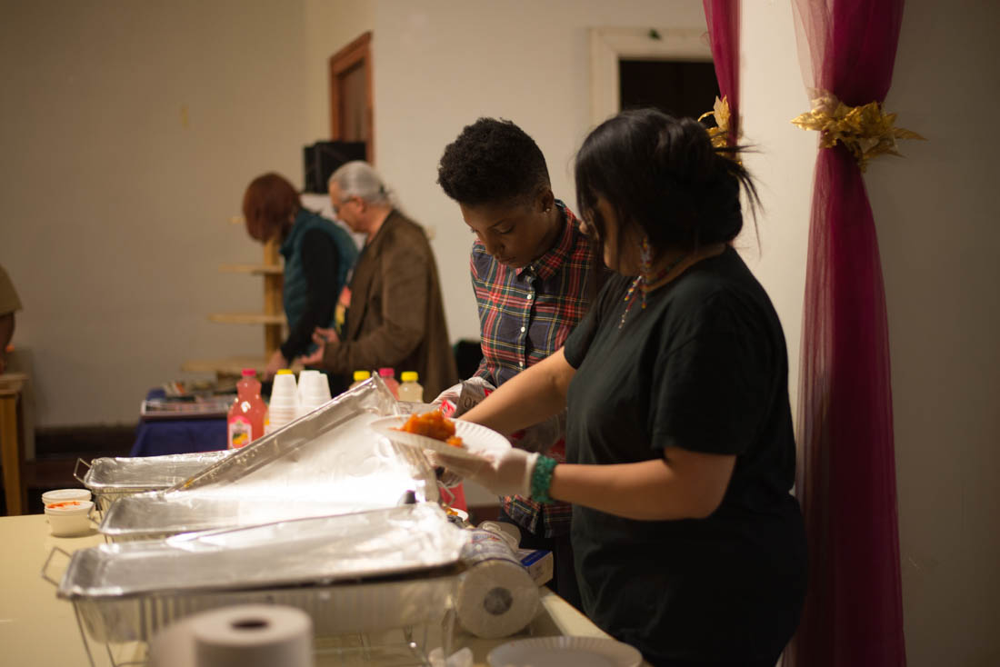
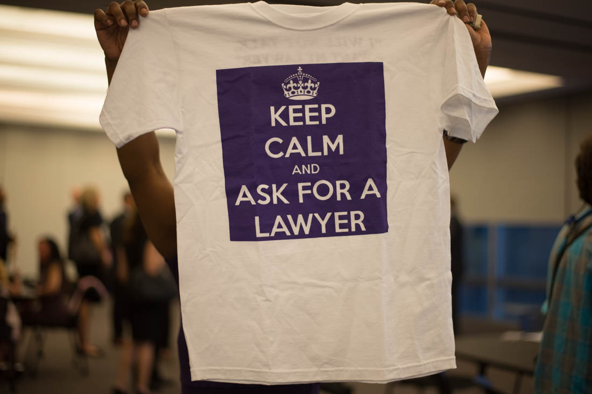
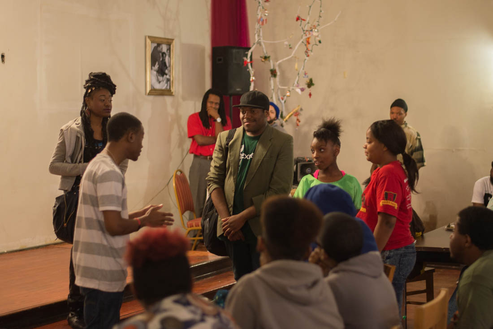

First Defense Legal Aid: Chicago lawyers give free counsel in free time
Reported and Written by Kate Morrissey | Produced by Alysha Khan
Mark Almanza lets his two dogs out when he gets home from work. For dinner, he orders a pizza. He then sits at his laptop working on one of his upcoming court cases or watches Netflix on his big-screen TV.
While this might look like a pretty typical evening for any working person in Chicago, Almanza is actually on duty, waiting for the phone to ring, ready at any moment to drive across the city to a police station to represent a probably very frightened person in police custody. His service is free.
“As a person who’s being held in custody, they’re isolated from the world,” Almanza said. “They’re not anywhere near their support system. Everything that happens at the police station is used against you. Everyone is trying to get something or do something against your interest.”
Almanza is a staff attorney for First Defense Legal Aid. He rotates throughout the week with the other staff attorneys, each working 48 hours straight - on call – followed by four days off. When on, he manages and advises the volunteers who work 6-hour shifts for the organization’s hotline. When there are no volunteers for a shift, Almanza takes the calls himself. On this particular night, there is no volunteer from 6 p.m. to 6 a.m.
Some nights no calls come in. Occasionally, he might get as many as three calls at once.
No matter the call volume, Almanza and the other attorneys who answer the hotline for First Defense Legal Aid make sure that someone is available 24 hours a day, seven days a week to support those in police custody by fulfilling their constitutional right to an attorney.
“We’re the only link that they would be able to have with anything,” he said. “Sometimes just understanding what’s happening to you really calms people down.”
At a recent benefit celebrating its 20-year anniversary, First Defense Legal Aid honored 20 individuals or groups whose work has brought justice to Chicago. (Kate Morrissey/Medill)
Most people who watch crime shows are at least somewhat familiar with the rights that anyone under arrest has via the Constitution’s Fifth Amendment - the right to remain silent and the right to an attorney. They became called the “Miranda rights” after the Supreme Court determined in the Miranda v. Arizona case in 1966 that people being questioned by the police must be notified of these rights in order for any statements they make to be used in court.
In the criminal justice process, if you do not have or cannot afford an attorney, you will not have one appointed for you until you see a judge. The first time you see a judge during the process is generally at bond court after you have been charged with a crime. In order to charge you with that crime, police officers and police detectives have already amassed evidence that you committed the crime. That evidence includes anything that you tell them during the interrogation process.
“The difference between people being convicted and being released comes down to what happens at the police station, and at that time people don’t have access to a free lawyer,” said Samoane Williams, a VISTA attorney for First Defense Legal Aid. VISTA positions are paid by AmeriCorps.
Once a police officer arrests you, the police can hold you in custody for up to 48 hours while they investigate and interrogate you before charging you and taking you to bond court, explained Eliza Solowiej, executive director of First Defense Legal Aid. She said that having a lawyer during those 48 hours is crucial to ensuring that people have fair trials.
“People under arrest are being held with police and prosecutors the whole time a case is being developed against them,” Solowiej said. “Even though they have the right to an attorney, currently the law doesn’t require that one be provided for them.”
It's Tuesday evening and you are walking home from work. You are about to be randomly stopped by a police officer on duty. You haven't committed a crime. Your goal is to get home as quickly as possible without having your rights violated.
To complicate the process more, sometimes police officers will use a friendly questioning tactic to get someone to talk without thinking he or she is under arrest. Once the person says something that gives the police sufficient evidence, he or she is arrested and charged.
Solowiej said that she attended training at the Reid Institute to see how police detectives learn to do interrogations.
“This is a company that for decades has trained investigators on how to get confessions,” Solowiej said. “They actually train detectives to build rapport with a suspect. The intention is to make the suspect think, ‘Oh, you know, you’re not really a suspect. You should just come talk to us and explain stuff and help us out.’”

Eliza Solowiej welcomes guests to a recent benefit celebrating First Defense Legal Aid's 20-year anniversary (Kate Morrissey/Medill)
If a client’s constitutional rights are violated during an interrogation when a lawyer is present to document that violation, the evidence obtained can be thrown out during a pretrial motion.
“First Defense is really putting teeth into the Miranda warning,” said Sladjana Vuckovic, a former legal director for First Defense Legal Aid who began volunteering with the organization in 1999.
Vuckovic said she’s talked with a couple of attorneys about cases in which the defendant was found guilty and sent to prison but is now going through the appeal process based on documentation that she gathered at the police station.
First Defense Legal Aid aims to be an advocate for anyone arrested in Chicago. Once the person goes to bond court, the Public Defender receives notes from the First Defense attorney and represents the client through the rest of the legal process.
“It’s something that helps even the playing field [between prosecution and defense]. We go out, and we defend people at a really vulnerable time,” said Robert Blazejowski, chair of the board of directors for First Defense.
For Almanza, his work is much more than just helping people who need help.
“It’s not just a need,” Almanza said. “It’s a basic constitutional right that people have that is being unfulfilled.”
That constitutional right exists whether the person in custody is guilty or innocent.
“It doesn’t matter from a criminal defense perspective,” Vuckovic said. “Everybody deserves the right to have a trial, to be found guilty. Everyone has the same rights. You can’t just say the constitution applies to some people but not to others.”
According to data obtained through a Freedom of Information Act request from the Chicago Police Department, the percentage of arrests that have had a lawyer present at the police station has hovered at less than half of one percent since the department began tracking lawyer visitations in May of 2012.
In 2014, only 0.3% of arrestees had lawyers come to see them while they were in custody. That means for every one thousand arrests, three arrestees had lawyers come to see them.
Looking at early access to an attorney from a monetary perspective, First Defense released a report in 2014 with findings that Cook County could save between $12.7 and $43.9 million annually if arrestees had access to lawyers within 24 hours of arrest. These savings arise from how much it costs to keep a person in jail or prison and calculations of how long people stay in jail or prison when they’ve had representation compared with when they haven’t.
“That doesn’t count city savings from police misconduct suits,” Solowiej added.
First Defense just celebrated its 20-year anniversary in May and remains the only such organization in the country. The organization formed in 1995 when a group of Chicago lawyers and activists got together to try to address what they saw as a glaring gap in the system.

Samoane Williams (left) recognizes Herschella Conyers (right) at a recent benefit for First Defense Legal Aid’s 20-year anniversary for helping to found the organization in 1995 (Kate Morrissey/Medill)
“There’s just a huge gap in the criminal justice system between poor people and rich people,” Vuckovic said emphatically. “The saying is that it’s better to be rich and guilty than innocent and poor in the criminal justice system.”
While that gap exists in the criminal justice process across the country, Chicago, with its history of police violence, false confessions and wrongful conviction rates, might have been the perfect place to start.
Chicago is actually known as the false confession capital of the United States, according to Solowiej. 60 Minutes even did a special on it. In the National Registry of Exonerations, Illinois boasts 62 exonerees where one of the contributing factors of the person’s release was a false confession. The next highest-ranking state, New York, has 29. Additionally, with a legacy like the Jon Burge torture cases haunting Chicago police history, police detectives in the city do not exactly have the reputation of friendly interrogators.
“[People who are innocent] confess to something because they were coerced into doing so,” Williams said. “That’s why it’s so important [to have a lawyer there].”
While Texas leads the country in the overall count of exonerees in the National Registry of Exonerations, Illinois has more than twice as many exonerees due to false confessions than even the second highest-ranking state, New York.
Many of the lawyers who work or have worked for First Defense Legal Aid alluded to CPD’s “code of silence” and “culture of harassment.” Several recalled their own experiences as youth being harassed or searched without consent by the police.
While Vuckovic said that CPD behavior has improved some in recent years, she was quick to point out that “we’re in Burge country,” so it doesn’t take much to improve on past behavior.
Historically tense relationships between police officers and communities of color in particular give suspects tangible reasons to cooperate with the police during interrogations out of fear, even if cooperation means giving up their Fifth Amendment rights.
Alma Montes, who works on First Defense’s Know Your Rights educational campaign, visits places like the West Side Association for Community Action weekly to host workshops for youth. At the West Side Association, she sits among a circle of juvenile offenders who participate in an evening reporting program in lieu of being in a detention center. Each teen has an electronic monitoring device on his ankle.
As Montes teaches, one boy fidgets noisily. Another sinks in his chair until a supervisor tells him to sit up straight. A third leans against a table. Only one sits up, leaning forward with eyes full of attention.
She asks them if they feel comfortable using what she’s told them. The boy slouching in his chair says he doesn’t think it will make a difference. He says he thinks police will search him even if he says he doesn’t consent. The group agrees with him. They talk about interactions with the police with an air of resignation.
“They’re going to do what they’re going to do,” one says.
Montes says this reaction from young people of color is common.
“In every group I have one young man who will stay on that position,” she said. “That’s very common to hear the story that way. We try to work with that young person to feel comfortable and to look at that more critically.”

Alma Montes (right) and Samoane Williams (left) prepare food for attendees of a Know Your Rights event in Englewood (Kate Morrissey/Medill)
The historical tensions still show up in current statistics on Chicago police behavior. According to the 2010 Census, the African-American population makes up about 32 percent of the city’s population. However, more than 70 percent of the incidents involving use of force by a Chicago police officer in each of the last three years were against African-Americans, according to data obtained through a Freedom of Information Act request from the Chicago Police Department. CPD did not respond to multiple requests for comment.
While 2010 Census data for the city of Chicago shows that the white population and African-American population are almost the same percentage of the city, over 70 percent of the encounters involving force are with African-Americans.
Vennessa Redmond, media organizer for the Know Your Rights campaign, said she believes people not knowing their rights and not having a lawyer present at the police station “is directly connected to the mass incarceration of black people.”
“If we can cut down on the amount of cases that actually happen, that would slow down mass incarceration,” she said.
To tackle the problem from both ends, First Defense Legal Aid’s education campaign works to ensure that Chicagoans know their constitutional rights. Know Your Rights campaign volunteers do everything from passing out educational materials on street corners to painting murals and teaching workshops about how to invoke constitutional rights when interacting with a police officer.

First Defense sells t-shirts advertising its hotline number at a recent benefit celebrating the organization's 20-year anniversary (Kate Morrissey/Medill)
They focus on both the Miranda rights and the right not to consent to a search. Since police officers aren’t required to tell a suspect that he or she is under arrest, Know Your Rights volunteers also teach people to ask, “Am I free to go?” to determine whether they are actually being detained.
“I think that police interactions would be better with us just knowing our basic rights,” Redmond said. “How do we even know we’re being violated? How do we protect ourselves and advocate for ourselves in court when we don’t even know police have violated us?”
At one recent open mic event in Englewood, Know Your Rights volunteers interspersed educational scenarios between poetic performances. In one scenario, two teens are questioned by the police because they “fit a description” for a crime that the police are investigating. Charles Jones, a Know Your Rights volunteer, explains that the teens don’t know what the police know when they are stopped. Simply answering where they were coming from places them unknowingly at the scene of a crime, and, in the officer’s mind, corroborates the identification by description.

Attendees of the Know Your Rights open mic in Englewood participate in a scenario where a police officer asks to search them (Kate Morrissey)
The volunteers reiterate the hotline number. Two sing a jingle for First Defense that they recently wrote for the radio.
“Most cases are won and lost at the police station,” Jones explains to the crowd.
Redmond said the Know Your Rights campaign has a goal of doing 100 workshops before the end of June.
“The summer is approaching,” she said. “We know things get more hectic in the summer, so we want to make sure we go into the summer with people knowing their rights.”
To further assist people in police custody, First Defense is currently in conversation with the Chicago Police Department to post signs with its hotline number, along with the number for any other organization like it that might eventually exist, placed visibly in police stations so that people have access to it when they get their phone calls.
Vuckovic said she thinks First Defense protects police as well because the lawyer documents what transpires between the officers and the suspect. Just as the lawyer’s presence protects against false confessions, it can give more weight to the true ones.
“It keeps everybody on the up and up,” she said. “They get accused of things that maybe aren’t true. To have open, clear, transparency at the police station, I think that has to be the future.”